Sketcher Workbench/es

Introducción
Con  el Entorno de Trabajo de Croquis se pueden crear bocetos 2D destinados a ser utilizados en otros entornos de trabajo. Los bocetos 2D son el punto de partida de muchos modelos CAD. Por lo general, definen los perfiles y las trayectorias para las operaciones que crean formas 3D. Un modelo puede depender de varios bocetos para su forma final.
el Entorno de Trabajo de Croquis se pueden crear bocetos 2D destinados a ser utilizados en otros entornos de trabajo. Los bocetos 2D son el punto de partida de muchos modelos CAD. Por lo general, definen los perfiles y las trayectorias para las operaciones que crean formas 3D. Un modelo puede depender de varios bocetos para su forma final.
Junto con las operaciones booleanas definidas en el  Ambiente de Trabajo de Pieza, el Ambiente de Trabajo de Croquis, o "Croquizador" para abreviar, constituye la base del método Geometría Sólida Constructiva (Constructive Solid Geometry o CSG) para la construcción de sólidos. Junto con las operaciones del
Ambiente de Trabajo de Pieza, el Ambiente de Trabajo de Croquis, o "Croquizador" para abreviar, constituye la base del método Geometría Sólida Constructiva (Constructive Solid Geometry o CSG) para la construcción de sólidos. Junto con las operaciones del  Entorno de Trabajo de Pieza, también constituye la base de la metodología edición de características para la creación de sólidos. Pero muchos otros entornos de trabajo también utilizan bocetos.
Entorno de Trabajo de Pieza, también constituye la base de la metodología edición de características para la creación de sólidos. Pero muchos otros entornos de trabajo también utilizan bocetos.
El Entorno de Trabajo Croquizador incluye Restricciones, lo que permite que las formas 2D sigan definiciones geométricas precisas en términos de longitud y ángulos, además de relaciones de horizontalidad, verticalidad, perpendicularidad, paralalismo, simetría etc. Un solucionador de restricciones calcula la extensión restringida de la geometría 2D y permite explorar de forma interactiva los grados de libertad del boceto.
El Croquizador no está diseñado para generar planos 2D. Una vez que se utilizan bocetos para generar una operación sólida, estos se ocultan automáticamente y las restricciones solo son visibles en el modo de edición de bocetos. Si solo necesita generar vistas 2D para impresión y no desea crear modelos 3D, consulte el Entorno de Trabajo de Bocetos.
{kind=link}
Un croquis completamente restringido
Restricciones
Las restricciones se utilizan para limitar los grados de libertad de un objeto. Por ejemplo, una línea sin restricciones tiene 4 grados de libertad (abreviados como "DoF"): pues puede moverse horizontal o verticalmente, estirarse y rotarse.
Aplicar una restricción horizontal o vertical, o una restricción angular (con respecto a otra línea o a uno de los ejes), limitará su capacidad de rotación, dejándole así 3 grados de libertad. Fijar uno de sus puntos con respecto al origen eliminará otros 2 grados de libertad. Y aplicar una dimensión de distancia eliminará el último grado de libertad. En ese caso, la línea se considera «completamente restringida».
Los objetos pueden estar restringidos entre sí. Por ejemplo, dos líneas pueden unirse a través de uno de sus puntos con una restricción de coincidencia. Se puede establecer un ángulo entre ellas o hacerlas perpendiculares. Una línea puede ser tangente a un arco o a un círculo, etc. Un boceto puede tener varias soluciones diferentes, y al hacer que esté "totalmente restringido" significa que solo se ha alcanzado una de estas posibles soluciones en función de las restricciones aplicadas. Véase también: [[#Flipping|Los objetos pueden estar restringidos entre sí. Dos líneas pueden unirse a través de uno de sus puntos con una restricción de coincidencia. Se puede establecer un ángulo entre ellas o hacerlas perpendiculares. Una línea puede ser tangente a un arco o a un círculo, etc. Un boceto puede tener varias soluciones diferentes, y al hacer que esté "totalmente restringido" significa que solo se ha alcanzado una de estas posibles soluciones en función de las restricciones aplicadas. Véase también: Voltear.]].
Existen dos tipos de restricciones: geométricas y dimensionales. A continuación, se detallan en la sección Herramientas .
Restricciones de edición
Cuando se crea una restricción dimensional impulsora y si se selecciona la preferencia Solicitar valor después de crear una restricción dimensional la preferencia (por defecto), se abre un cuadro de diálogo para editar su valor.
{kind=link}
Puede introducir un valor numérico o una expresión, y es posible nombrar la restricción para facilitar su uso en otras expresiones. También puede marcar la casilla Reference para cambiar la restricción al modo referencia.
Para editar el valor de una restricción dimensional existente, realice una de las siguientes acciones:
- Haga doble clic en el valor de la restricción en la Vista 3D.
- Haga doble clic en la restricción sobre el Diálogo de dibujo.
- Haga clic con el botón derecho en la restricción en el Diálogo de dibujo y seleccione la opción Cambiar valor del menú contextual.
Restricciones de reposicionamiento
Las restricciones dimensionales se pueden reubicar en la vista 3D arrastrándolas. Mantenga pulsado el botón izquierdo del ratón sobre el valor de la restricción y mueva el ratón. Los símbolos de las restricciones geométricas se posicionan automáticamente y no se pueden mover.
Croquis de perfil
Para crear un croquis o boceto que sirva como perfil para generar sólidos, se deben seguir ciertas reglas imprescindibles:
- El boceto debe contener únicamente contornos cerrados. No se permiten huecos entre los extremos, por pequeños que sean.
- Los contornos pueden anidarse para crear huecos, pero no deben autointersecarse ni intersecarse con otros contornos.
- Los contornos no pueden compartir aristas con otros contornos. No se permiten aristas duplicadas ni superpuestas.
- No se permiten conexiones en T, es decir, más de dos aristas que comparten un punto común, o un punto que toca una arista.
{kind=link}
Bocetos no válidos:
1. Contorno abierto (puntos finales libres resaltados por la Herramienta de Validación de Bocetos)
2. Contornos que se intersecan
3. Aristas duplicadas (puntos finales de aristas superpuestas resaltados por la Herramienta de Validación de Bocetos)
4. Conexiones en T
Estas reglas no se aplican a la geometría de construcción (color azul por defecto), que no se muestra fuera del modo de edición, ni si el boceto se utiliza para otro fin. Dependiendo del entorno de trabajo y de la herramienta que utilice el boceto de perfil, pueden aplicarse restricciones adicionales.
Herramientas
Las herramientas del Entorno de Trabajo de Croquis se encuentran en el menú Croquis o en varias barras de herramientas. Casi todas las barras de herramientas del Croquizador solo se muestran cuando un boceto está en modo de edición. La única excepción es la barra de herramientas de Croquis, que solo se muestra si no hay ningún boceto en modo de edición.
También están disponibles algunas herramientas desde el menú contextual Vista 3D mientras un boceto está en modo de edición, o desde los menús contextuales del Diálogo del Croquizador.
Si un boceto o croquis está en modo de edición, la barra de herramientas Estructura se oculta, ya que ninguna de sus herramientas se puede utilizar en ese caso.
General
Barra de herramientas del Croquizador
 Nuevo Boceto: Crea un nuevo boceto y abre el Diálogo del Bocetador para editarlo.
Nuevo Boceto: Crea un nuevo boceto y abre el Diálogo del Bocetador para editarlo.
 Editar Croquis: Edita el croquis seleccionado. Esto abrirá el Diálogo del Croquizador.
Editar Croquis: Edita el croquis seleccionado. Esto abrirá el Diálogo del Croquizador.
 Adjuntar Boceto: Adjunta un boceto a la geometría seleccionada.
Adjuntar Boceto: Adjunta un boceto a la geometría seleccionada.
- Reorientar Croquis: Permite adjuntar el boceto a uno de los planos principales.
{kind=link}
 Validar Boceto: Puede analizar y reparar un boceto que ya no es editable o tiene restricciones no válidas, o agregar restricciones coincidentes faltantes.
Validar Boceto: Puede analizar y reparar un boceto que ya no es editable o tiene restricciones no válidas, o agregar restricciones coincidentes faltantes.
 Combinar bocetos: Combina dos o más bocetos.
Combinar bocetos: Combina dos o más bocetos.
- Reflejar Boceto: Refleja los bocetos a través de su eje X, eje Y u origen.
{kind=link}
Barra de herramientas del modo de edición
 Salir del Boceto: Finaliza el modo de edición del boceto y cierra el Diálogo del Boceto.
Salir del Boceto: Finaliza el modo de edición del boceto y cierra el Diálogo del Boceto.
- Alinear vista con boceto: Alinea la Vista 3D con el boceto.
{kind=link}
- Alternar Vista de Sección: Activa o desactiva un plano de sección temporal que oculta cualquier objeto y partes de objetos que se encuentren delante del plano de boceto.
{kind=link}
Otros
- Detener operación: Detiene cualquier herramienta de creación de geometría o restricciones que se esté ejecutando en ese momento.
{kind=link}
- Rejilla: La configuración de la cuadrícula se puede cambiar en el menú de la Sección de edición de bocetos del cuadro de diálogo del Bocetador.
- Snap: Los ajustes de Snap se pueden cambiar en el mismo menú.
- Orden de renderizado: El orden de renderizado se puede cambiar en el mismo menú.
Geometrías
Estas son herramientas para crear objetos.
- Punto: Crea un punto.
{kind=link}
- Polilínea: Crea una serie de segmentos de línea y arco conectados por sus puntos finales. La herramienta tiene varios modos de uso.
{kind=link}
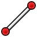
Línea: Crea una línea. introduced in 1.0: La herramienta tiene tres modos.
{kind=link}
{kind=link}
{kind=link}
- Arco desde el centro: Crea un arco desde su centro y sus puntos extremos. introduced in 1.0: O desde sus puntos extremos y un punto a lo largo del arco.
- Arco desde 3 puntos: Crea un arco desde sus puntos extremos y un punto a lo largo del arco. introduced in 1.0: Esta es la misma herramienta que Arco desde el centro pero con un modo inicial diferente.
{kind=link}
- Arco elíptico: Crea un arco elíptico.
{kind=link}
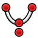
Arco hiperbólico: Crea un arco hiperbólico.
{kind=link}
- Arco parabólico: Crea un arco parabólico.
{kind=link}
{kind=link}
- Círculo desde el centro: Crea un círculo desde su centro y un punto a lo largo del círculo. introduced in 1.0: O desde tres puntos a lo largo del círculo.
- Círculo a partir de 3 puntos: Crea un círculo a partir de tres puntos a lo largo del círculo. introduced in 1.0: Esta es la misma herramienta que Círculo desde el centro pero con un modo inicial diferente.
{kind=link}
- Elipse From Center: Crea una elipse a partir de su centro, un extremo de uno de sus ejes y un punto a lo largo de la elipse. introduced in 1.0: O a partir de ambos extremos de uno de sus ejes y un punto a lo largo de la elipse.
{kind=link}
- Elipse desde 3 Puntos: Crea una elipse a partir de los extremos de uno de sus ejes y un punto a lo largo de la elipse. introduced in 1.0: Esta es la misma herramienta que Elipse desde Centro pero con un modo inicial diferente.
{kind=link}
 Rectángulo: Crea un rectángulo. introduced in 1.0: La herramienta tiene cuatro modos. Las esquinas redondeadas y la creación de una copia desplazada son características opcionales.
Rectángulo: Crea un rectángulo. introduced in 1.0: La herramienta tiene cuatro modos. Las esquinas redondeadas y la creación de una copia desplazada son características opcionales.
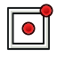
Rectángulo Centrado: Crea un rectángulo centrado. introduced in 1.0: Esta es la misma herramienta que Rectángulo pero con un modo inicial diferente.
{kind=link}
- Rectángulo Redondeado: Crea un rectángulo redondeado. Ídem.
{kind=link}
{kind=link}
- Triángulo: crea un triángulo equilátero. introduced in 1.0: Esta es la misma herramienta que Polígono pero con el número de lados preestablecido a un valor específico.
{kind=link}
- Cuadrado: Crea un cuadrado. Ídem.
{kind=link}
- Pentágono: Crea un pentágono. Idem.
{kind=link}
- Hexágono: Crea un hexágono. Ídem.
- Heptágono: Crea un heptágono. Idem.
{kind=link}
- Octógono: Crea un octógono regular. Idem.
{kind=link}
- Polígono: Crea un polígono regular. Se puede especificar el número de lados.
{kind=link}
 Ranura: Crea una ranura.
Ranura: Crea una ranura.
- Ranura de arco: Crea una ranura de arco. introduced in 1.0
{kind=link}
- 32px B-Spline: Crea una curva B-spline a partir de puntos de control. Template:Versión: O a partir de puntos de nodo.
{kind=link}
- 32px B-Spline periódica: Crea una curva B-spline periódica (cerrada) a partir de puntos de control. Template:Versión: Esta es la misma herramienta que B-Spline pero con un modo inicial diferente.
{kind=link}
- 32px B-Spline a partir de nudos: Crea una curva B-spline a partir de puntos de nudo. Ídem.
{kind=link}
- 32px B-Spline periódica a partir de nodos: Crea una curva B-spline periódica (cerrada) a partir de puntos de nodos. Idem.
{kind=link}
- 32px Texto: Crea geometría de texto controlada por una restricción de texto Template:Versión.
{kind=link}
 Modo de construcción: Cambia la geometría del boceto del modo de construcción. La geometría de la construcción se muestra en azul y se descarta fuera del modo de edición del boceto.
Modo de construcción: Cambia la geometría del boceto del modo de construcción. La geometría de la construcción se muestra en azul y se descarta fuera del modo de edición del boceto.
Restricciones
A continuación se muestran las herramientas para crear restricciones. Algunas restricciones requieren el uso de restricciones auxiliares.
{kind=link}
- Dimensión: Es la herramienta de restricciones contextuales del Enntorno de Trabajo Croquizador. Según la selección actual, ofrece restricciones dimensionales y geométricas adecuadas. introduced in 1.0
 Dimensión Horizontal: Fija la distancia horizontal entre dos puntos o los extremos de una línea. Si se preselecciona un solo punto, la distancia es relativa al origen del boceto.
Dimensión Horizontal: Fija la distancia horizontal entre dos puntos o los extremos de una línea. Si se preselecciona un solo punto, la distancia es relativa al origen del boceto.
 Dimensión Vertical: Fija la distancia vertical entre dos puntos o los extremos de una línea. Si se preselecciona un solo punto, la distancia es relativa al origen del boceto.
Dimensión Vertical: Fija la distancia vertical entre dos puntos o los extremos de una línea. Si se preselecciona un solo punto, la distancia es relativa al origen del boceto.
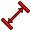
Dimensión de Distancia: Fija la longitud de una línea, la distancia entre dos puntos, la distancia perpendicular entre un punto y una línea; o la distancia entre los bordes de dos círculos o arcos, o entre el borde de un círculo o arco y una línea; o, Template:Versión, la longitud de un arco.
{kind=link}
 Radius/Diameter Dimension: Fixes the radius of arcs and B-spline weight circles, and the diameter of circles.
Radius/Diameter Dimension: Fixes the radius of arcs and B-spline weight circles, and the diameter of circles.
- Dimensión del Radio: Corrige el radio de círculos, arcos y círculos de peso en B-spline.
{kind=link}
 Dimensión del Diámetro: Fija el diámetro de círculos y arcos.
Dimensión del Diámetro: Fija el diámetro de círculos y arcos.
 Dimensión del Ángulo: Fija el ángulo entre dos bordes, el ángulo de una línea con el eje horizontal del boceto o el ángulo de apertura de un arco circular.
Dimensión del Ángulo: Fija el ángulo entre dos bordes, el ángulo de una línea con el eje horizontal del boceto o el ángulo de apertura de un arco circular.
 Bloquear posición: Aplica restricciones de Dimensión Horizontal y Dimensión Vertical a los puntos. Si se selecciona un solo punto, las restricciones hacen referencia al origen del boceto. Si se seleccionan dos o más puntos, las restricciones hacen referencia al último punto seleccionado.
Bloquear posición: Aplica restricciones de Dimensión Horizontal y Dimensión Vertical a los puntos. Si se selecciona un solo punto, las restricciones hacen referencia al origen del boceto. Si se seleccionan dos o más puntos, las restricciones hacen referencia al último punto seleccionado.
 Restricción de coincidencia (unificada): Crea una restricción de coincidencia entre puntos, fija puntos en aristas o ejes, o crea una restricción concéntrica. Combina las herramientas Restricción de Coincidencia y Restricción de Punto en Objeto. Template:Versión
Restricción de coincidencia (unificada): Crea una restricción de coincidencia entre puntos, fija puntos en aristas o ejes, o crea una restricción concéntrica. Combina las herramientas Restricción de Coincidencia y Restricción de Punto en Objeto. Template:Versión
- Restricción de coincidencia: Crea una restricción de coincidencia entre puntos o una restricción concéntrica.
{kind=link}
- Restricción de punto en objeto: Fija puntos en bordes o ejes.
{kind=link}
{kind=link}
- Restricción Horizontal/Vertical: Restringe líneas o pares de puntos para que sean horizontales o verticales, según cuál esté más cerca de la alineación actual. Combina las herramientas Restricción Horizontal y Restricción Vertical. introduced in 1.0
- Restricción Horizontal: Restringe líneas o pares de puntos para que sean horizontales.
{kind=link}
- Restricción Vertical: Restringe líneas o pares de puntos para que sean verticales.
{kind=link}
 Restricción Paralela: Restringe las líneas para que sean paralelas.
Restricción Paralela: Restringe las líneas para que sean paralelas.
 Restricción Perpendicular: Restringe dos líneas para que sean perpendiculares, o dos aristas, o una arista y un eje, para que sean perpendiculares en su intersección. La restricción también puede conectar dos aristas, obligándolas a ser perpendiculares en la unión.
Restricción Perpendicular: Restringe dos líneas para que sean perpendiculares, o dos aristas, o una arista y un eje, para que sean perpendiculares en su intersección. La restricción también puede conectar dos aristas, obligándolas a ser perpendiculares en la unión.
- Restricción Tangente/Colineal: Restringe dos aristas, o una arista y un eje, para que sean tangentes. La restricción también puede conectar dos aristas, forzándolas a ser tangentes en la unión. Si se seleccionan dos líneas, se convierten en colineales.
{kind=link}
 Restricción de Igualdad: Restringe los bordes para que tengan la misma longitud (líneas) o curvatura (otros bordes excepto B-splines).
Restricción de Igualdad: Restringe los bordes para que tengan la misma longitud (líneas) o curvatura (otros bordes excepto B-splines).
 Restricción Simétrica: Restringe dos puntos para que sean simétricos alrededor de una línea o eje, o alrededor de un tercer punto.
Restricción Simétrica: Restringe dos puntos para que sean simétricos alrededor de una línea o eje, o alrededor de un tercer punto.
 Restricción de Bloque: Bloquea los bordes en su lugar con una sola restricción. Está principalmente destinado a B-splines.
Restricción de Bloque: Bloquea los bordes en su lugar con una sola restricción. Está principalmente destinado a B-splines.
- Restricción de grupo: Agrupa la geometría seleccionada. introduced in 1.2
{kind=link}
 Restricción de Refracción: Restringe dos líneas para que sigan la ley de refracción de la luz a medida que penetra a través de una interfaz.
Restricción de Refracción: Restringe dos líneas para que sigan la ley de refracción de la luz a medida que penetra a través de una interfaz.
 Alternar restricciones de Conducción/Referencia: Alterna las herramientas de creación de restricciones dimensionales entre el modo de conducción y el de referencia, o alterna las restricciones dimensionales seleccionadas entre esos modos.
Alternar restricciones de Conducción/Referencia: Alterna las herramientas de creación de restricciones dimensionales entre el modo de conducción y el de referencia, o alterna las restricciones dimensionales seleccionadas entre esos modos.
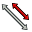
Alternar Restricciones: Activa o desactiva las restricciones seleccionadas.
{kind=link}
Herriamentas del Croquizador
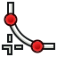
Create Fillet/Chamfer:
{kind=link}
- Redondeo: Crea un redondeo entre dos bordes no paralelos. introduced in 1.0: La herramienta también puede crear un chaflán.
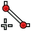
Chaflán: crea un chaflán entre dos aristas no paralelas. Esta es la misma herramienta que Redondeo pero con un modo inicial diferente. introduced in 1.0
{kind=link}
{kind=link}
- Recorte de Borde: Recorta un borde en las intersecciones más cercanas con otros bordes.
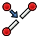
Dividir Arista: Divide una arista mientras transfiere la mayoría de las restricciones.
{kind=link}
- Extender Borde: Extiende una línea o un arco a una línea límite, arco, elipse, arco de elipse o un punto en el espacio.
{kind=link}
 Proyección externa: Crea los bordes de proyección de la geometría externa. introduced in 1.1
Proyección externa: Crea los bordes de proyección de la geometría externa. introduced in 1.1
- Intersección Externa: Crea los bordes de intersección de la geometría externa con el plano del boceto. introduced in 1.1
{kind=link}
- Copia al Carbón: Copia toda la geometría y las restricciones de otro boceto al boceto activo.
{kind=link}
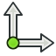
Seleccionar origen: Selecciona el origen del boceto.
{kind=link}
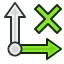
Seleccionar Eje Horizontal: Selecciona el eje horizontal del boceto.
{kind=link}
- Seleccionar Eje Vertical: Selecciona el eje vertical del boceto.
{kind=link}
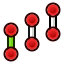
Transformación de Movimiento/Matriz: Mueve u, opcionalmente, crea copias de los elementos seleccionados. Template:Versión
{kind=link}
- Rotación/Transformación polar: Gira u, opcionalmente, crea copias giradas de los elementos seleccionados. Template:Versión
{kind=link}
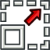
Scale: Escala u, opcionalmente, crea copias escaladas de los elementos seleccionados. introduced in 1.0
{kind=link}
- Offset: Crea bordes equidistantes alrededor de los bordes seleccionados. introduced in 1.0
{kind=link}
 Espejo: Crea copias reflejadas de los elementos seleccionados.
Espejo: Crea copias reflejadas de los elementos seleccionados.
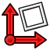
Eliminar Alineación de Ejes: Elimina la alineación de ejes de los bordes seleccionados reemplazando las restricciones Horizontal y Vertical con las restricciones Paralelo y Perpendicular.
{kind=link}
- Eliminar toda la Geometría: Elimina toda la geometría y todas las restricciones del boceto.
{kind=link}
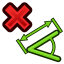
Eliminar todas las Restricciones: Elimina todas las restricciones del boceto.
{kind=link}
- Copy Elements: See Copy, cut and paste.
{kind=link}
 Cut Elements: See Copy, cut and paste.
Cut Elements: See Copy, cut and paste.
 Paste Elements: See Copy, cut and paste.
Paste Elements: See Copy, cut and paste.
Herramientas B-spline
- 32px Geometría a B-Spline: Convierte aristas en B-splines.
{kind=link}
- Incrementar Grado de B-Spline: Aumenta el grado (orden) de las B-splines.
{kind=link}
- Disminuir el grado de B-Spline: Disminuye el grado (orden) de las B-splines.
{kind=link}
- Incrementar Multiplicidad de Nudos: Aumenta la multiplicidad de un nudo B-spline.
{kind=link}
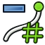
Disminuir la Multiplicidad del Nudo: Disminuye la multiplicidad de un nudo B-spline.
{kind=link}
- Insertar Nudo: Inserta un nudo en una B-spline o aumenta la multiplicidad de un nudo existente.
{kind=link}
- Unir Curvas: Crea una B-spline uniendo dos B-splines existentes u otros bordes.
{kind=link}
Ayudantes visuales
 Seleccionar Elementos Subrestringidos: Selecciona los elementos que no están completamente restringidos en el boceto.
Seleccionar Elementos Subrestringidos: Selecciona los elementos que no están completamente restringidos en el boceto.
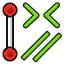
Seleccionar Restricciones Asociadas: Selecciona las restricciones asociadas a los elementos del boceto.
{kind=link}
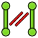
Seleccionar Geometría Asociada: Selecciona los elementos del boceto asociados con las restricciones.
{kind=link}
 Seleccionar Restricciones Redundantes: Selecciona las restricciones redundantes en el boceto.
Seleccionar Restricciones Redundantes: Selecciona las restricciones redundantes en el boceto.
 Seleccionar Restricciones Conflictivas: Selecciona las restricciones conflictivas en el boceto.
Seleccionar Restricciones Conflictivas: Selecciona las restricciones conflictivas en el boceto.
- Alternar Ayudante Circular para Arcos: Muestra u oculta los ayudantes circulares (círculos virtuales subyacentes) para arcos en todos los bocetos. introduced in 1.0
{kind=link}
{kind=link}
- Alternar Grado de B-spline: Muestra u oculta el grado de B-spline en todos los bocetos.
{kind=link}
- Alternar Polígono de Control B-spline: Muestra u oculta el polígono de control B-spline en todos los bocetos.
{kind=link}
{kind=link}
{kind=link}
 Mostrar/Ocultar geometría interna: Recrea la geometría interna que falta/elimina la innecesaria de una elipse, arco de elipse/hiperbola/parábola o B-spline seleccionados.
Mostrar/Ocultar geometría interna: Recrea la geometría interna que falta/elimina la innecesaria de una elipse, arco de elipse/hiperbola/parábola o B-spline seleccionados.
 Cambiar el espacio virtual: Permite ocultar todas las restricciones de un boceto y hacerlas visibles de nuevo.
Cambiar el espacio virtual: Permite ocultar todas las restricciones de un boceto y hacerlas visibles de nuevo.
Obsolete tools
- Clonar: Clona un elemento del croquis
{kind=link}
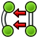
Forma cercana: Crea una forma cerrada aplicando restricciones coincidentes a los puntos finales
{kind=link}
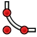
Corner-preserving fillet: Creates a fillet between two non-parallel lines while preserving their corner point. Not available in 1.0 and above.
{kind=link}
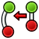
Conecta los bordes: Conectar los elementos del esbozo aplicando restricciones coincidentes a los puntos finales
{kind=link}
- Copiar: Copia un elemento del croquis
{kind=link}
- Geometría externa: Crea una arista enlazada a geometría externa.
{kind=link}
- Muévete: Mueve la geometría seleccionada tomando como referencia el último punto seleccionado.
{kind=link}
 ordenación rectangular: Crea un conjunto de elementos seleccionados de croquis
ordenación rectangular: Crea un conjunto de elementos seleccionados de croquis
Preferencias
 Preferencias: Preferencias para el ambiente de trabajo Croquis.
Preferencias: Preferencias para el ambiente de trabajo Croquis.
Drawing aids
The Sketcher Workbench has several drawing aids and other features that can help when creating geometry and applying constraints.
Continue modes
There are two continue modes: Geometry creation "Continue Mode" and Constraint creation "Continue Mode". If these are checked (default) in the preferences, related tools will restart after finishing. To exit a continuous tool press Esc or the right mouse button. This must be repeated if a continuous geometry tool has already received input. You can also exit a continuous tool by starting another geometry or constraint creation tool. Note that pressing Esc if no tool is active will exit sketch edit mode. Uncheck the Esc key can leave sketch edit mode preference if you often inadvertently press Esc too many times.
Auto constraints
In sketches that have Auto constraints checked (default) several constraints are applied automatically. The icon of a proposed automatic constraint is shown next to the cursor when it is placed correctly. Left-clicking will then apply that constraint. This is a per-sketch setting that can be changed in the Sketcher Dialog or by changing the VistaAutoconstraints property of the sketch.
The following constraints are applied automatically:
- Coincident
- Point-on-object
- Horizontal
- Vertical
- Tangent
- introduced in 1.0: Symmetric (line midpoint)
Snapping
It is possible to snap to grid lines and grid intersection, and to snap to edges of geometry and midpoints of lines and arcs, and to certain angles. Please note that snapping does not produce constraints in and of itself. For example, only if Auto constraints is switched on will snapping to an edge produce a point-on-object constraint. But just picking a point on the edge would then have the same result.
On-View-Parameters
Depending on the selected option in the preferences only the dimensional On-View-Parameters or both the dimensional and the positional On-View-Parameters can be enabled. Positional parameters allow the input of exact coordinates, for example the center of a circle, or the start point of a line. Dimensional parameters allow the input of exact dimensions, for example the radius of a circle, or the length and angle of a line. On-View-Parameters are not available for all tools.
{kind=link}
Determining the center point of a circle with the positional parameters enabled
{kind=link}
Determining the radius of a circle with the dimensional parameters enabled
If values are entered and confirmed by pressing Enter or Tab, related constraints are added automatically. If two parameters are displayed at the same time, for example the X- and Y-coordinate of a point, it is possible to enter one value and pick a point to define the other. Depending on the object additional constraints may be required to fully constrain it. Constraints resulting from On-View-Parameters take precedence over those that may result from Auto constraints.
{kind=link}
Arc created by entering all On-View-Parameters with resulting automatically created constraints
Coordinate display
If the Show coordinates next to the cursor while editing preference is checked (default), the parameters of the current geometry tool (coordinates, radius, or length and angle) are displayed next to the cursor. This is deactivated while On-View-Parameters are shown.
Selection methods
While a sketch is in edit mode the following selection methods can be used:
3D View element selection
As elsewhere in FreeCAD, an element can be selected in the 3D View with a single left mouse click. But there is no need to hold down the Ctrl key when selecting multiple elements. Holding down that key is possible though and has the advantage that you can miss-click without losing the selection. Edges, points and constraints can be selected in this manner.
3D View box selection
Box selection in the 3D View works without using Std BoxSelection or Std BoxElementSelection:
- Make sure that no tool is active.
- Do one of the following:
- Click in an empty area and drag a rectangle from left to right to select elements that lie completely inside the rectangle.
- Click in an empty area and drag a rectangle from right to left to also select elements that touch or cross the rectangle.
You can box-select edges and points, constraints cannot be box-selected.
3D View connected geometry selection
Double-clicking an edge in the 3D View will select all edges directly and indirectly connected with that edge via endpoints. There is no need for the edges to be connected with coincident constraints, endpoints need only have the same coordinates.
Sketcher Dialog selection
Edges and points can also be selected from the Elements section of the Sketcher Dialog, and constraints from the Constraints section of that dialog.
Select All shortcut
To select everything within a sketch, use the standard keyboard shortcut Ctrl+A or the Edit → Select All option from the menu.
Copy, cut and paste
The standard keyboard shortcuts, Ctrl+C, Ctrl+X and Ctrl+V, can be used to copy, cut and paste selected Sketcher geometry including related constraints. But these tools are also available from the Sketch → Sketcher Tools menu. They can be used within the same sketch but also between different sketches or separate instances of FreeCAD. Since the data is copied to the clipboard in the form of Python code, it can be used in other ways too (e.g. shared on the forum).
Best practices
Buenas practicas
Cada usuario de CAD desarrolla su propia forma de trabajar a lo largo del tiempo, pero hay algunos principios generales útiles a seguir.
- Una serie de croquis simples es más sencilla de manejar que un croquis complejo. Por ejemplo, un primer croquis se puede crear para la operación base 3D (ya sea un saliente o una revolución), mientras una segunda puede contener taladros o cajeras. Algunos detalles se pueden dejar fuera, para realizar luego como operaciones 3D. Puedes elegir evitar los redondeos en tu croquis si son muchos, y añadirlos como una operación 3D.
- Crea siempre un perfil cerrado, o tu croquis no producirá un sólido, sino un conjunto de caras abiertas. Si no quieres que alguno de los objetos sea incluido en la creación del sólido, cámbialos a elementos de construcción con la herramienta de Modo de Contrucción.
- Utiliza las restricciones automáticas para limitar el número de restricciones que tendrás que añadir manualmente.
- Como regla general, aplica las restricciones geométricas primero, luego las restricciones dimensionales, y bloquea tu croquis al final. Pero recuerda: Las reglas se hacen para romperlas. Si tienes problemas manipulando tu croquis, puede ser útil restringir algunos objetos antes de completar el perfil.
- Si es posible, centra tu croquis en el origen (0,0) con la restricción de bloqueo. Si tu croquis no es simétrico, ubica uno de sus puntos en el origen, o selecciona un buen número para las distancias de bloqueo. En la v0.12, las restricciones externas (restringiendo el croquis con respecto a geometría 3D como aristas u otros croquis) no están implementada. Esto significa q2ue para ubicar las siguientes geometrías de croquis a tu primer croquis, necesitaras definir distancias relativas a tu primer croquis manualmente. Una restricción de bloqueo de (25,75) desde el origen es más fácil de recordar que (23.47,73.02).
- Si tienes la posibilidad de seleccionar entre la Restricción Distancia y las restricciones de Distancia Vertical o Distancia Horizontal, es mejor que utilices las últimas pues se comportan mejor a nivel de consumo de memoria.
- En general, las mejores restricciones a utilizar son: Restricciones horizontales/verticales; Restricciones de distancia horizontal o vertical y tangencia en puntos finales. De ser posible, conviene limitar el uso de: Restricciones de Distancia; tangencia entre aristas; Punto en Objeto y simetría.
- Si tiene dudas sobre la validez de un boceto una vez completado (las características se vuelven verdes), cierre el cuadro de diálogo Sketcher, cambie al
 Ambiente de trabajos piezas y ejecuta Comprobar geometría.
Ambiente de trabajos piezas y ejecuta Comprobar geometría.
{kind=link}
Flipping
The phenomenon that a fully constrained sketch, usually after a major change to one of its dimensions, reaches an unintended new state is know as "flipping". In the example below, changing one dimension completely changes the shape of the sketch. Note that the sketch with the new shape is still fully constrained.
{kind=link}
{kind=link}
Original sketch (left), and the same sketch after increasing the 20mm value to 1000mm (right)
Methods to reduce flipping
Change dimensions in small increments
This is not always practical, but changing dimension values in smaller increments can work.
Use a different solver
The LevenbergMarquardt solver, which is not the default solver, is known to be less prone to flipping. See Sketcher Dialog for more information.
Use horizontal and vertical dimensions
{kind=link}
Using horizontal and vertical dimensions instead of distance dimensions or equal constraints can prevent flipping. Points constrained by these dimensions will only switch places if the sign of their value is changed. In the image above the added (orange) dimensional constraints are linked to the original dimensions via expressions.
Use angle dimensions
{kind=link}
Using angle dimensions instead of horizontal and vertical constraints can also work. The angle between edges constrained by angle dimensions will not change. 180° will not become 0°, 90° will not become 270°, etc. In the image all horizontal and vertical constraints have been replaced, but just replacing two is already effective here.
Tutoriales
- Tutorial de croquis por Chrisb. Este es un documento PDF de 70 páginas que sirve como un manual detallado para el croquis. Explica los fundamentos del uso del croquis, y entra en muchos detalles sobre la creación de formas geométricas, y cada una de las restricciones.
- Tutorial básico de dibujo para principiantes
- Coquis Micro Tutorial - Prácticas de Restricción
- Requisito por un boceto Requisito mínimo de un boceto y determinación completa de un boceto
Guión
La página Croquizador Guión contiene ejemplos sobre cómo crear restricciones a partir de scripts de Python.
Examples
For some ideas of what can be achieved with Sketcher tools, have a look at: Sketcher Examples.
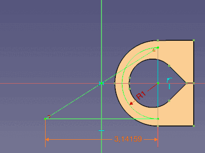 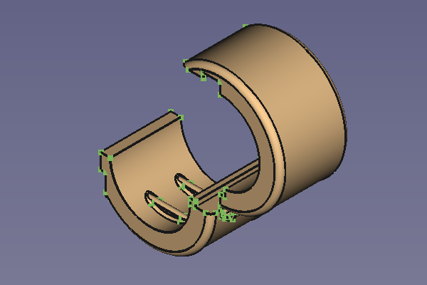
- General: New Sketch, Edit Sketch, Attach Sketch, Reorient Sketch, Validate Sketch, Merge Sketches, Mirror Sketch, Leave Sketch, Align View to Sketch, Toggle Section View, Stop Operation, Grid, Snap, Rendering Order
- Geometries: Point, Polyline, Line, Arc From Center, Arc From 3 Points, Elliptical Arc, Hyperbolic Arc, Parabolic Arc, Circle From Center, Circle From 3 Points, Ellipse From Center, Ellipse From 3 Points, Rectangle, Centered Rectangle, Rounded Rectangle, Triangle, Square, Pentagon, Hexagon, Heptagon, Octagon, Polygon, Slot, Arc Slot, B-Spline, Periodic B-Spline, B-Spline From Knots, Periodic B-Spline From Knots, Toggle Construction Geometry
- Constraints:
- Dimensional Constraints: Dimension, Horizontal Dimension, Vertical Dimension, Distance Dimension, Radius/Diameter Dimension, Radius Dimension, Diameter Dimension, Angle Dimension, Lock Position
- Geometric Constraints: Coincident Constraint (Unified), Coincident Constraint, Point-On-Object Constraint, Horizontal/Vertical Constraint, Horizontal Constraint, Vertical Constraint, Parallel Constraint, Perpendicular Constraint, Tangent/Collinear Constraint, Equal Constraint, Symmetric Constraint, Block Constraint, Refraction Constraint
- Constraint Tools: Toggle Driving/Reference Constraints, Toggle Constraints
- Sketcher Tools: Fillet, Chamfer, Trim Edge, Split Edge, Extend Edge, External Projection, External Intersection, Carbon Copy, Select Origin, Select Horizontal Axis, Select Vertical Axis, Move/Array Transform, Rotate/Polar Transform, Scale, Offset, Mirror, Remove Axes Alignment, Delete All Geometry, Delete All Constraints, Copy Elements, Cut Elements, Paste Elements
- B-Spline Tools: Geometry to B-Spline, Increase B-Spline Degree, Decrease B-Spline Degree, Increase Knot Multiplicity, Decrease Knot Multiplicity, Insert Knot, Join Curves
- Visual Helpers: Select Under-Constrained Elements, Select Associated Constraints, Select Associated Geometry, Select Redundant Constraints, Select Conflicting Constraints, Toggle Circular Helper for Arcs, Toggle B-Spline Degree, Toggle B-Spline Control Polygon, Toggle B-Spline Curvature Comb, Toggle B-Spline Knot Multiplicity, Toggle B-Spline Control Point Weight, Toggle Internal Geometry, Switch Virtual Space
- Additional: Sketcher Dialog, Preferences, Sketcher scripting
- Getting started
- Installation: Download, Windows, Linux, Mac, Additional components, Docker, AppImage, Ubuntu Snap
- Basics: About FreeCAD, Interface, Mouse navigation, Selection methods, Object name, Preferences, Workbenches, Document structure, Properties, Help FreeCAD, Donate
- Help: Tutorials, Video tutorials
- Workbenches: Std Base, Assembly, BIM, CAM, Draft, FEM, Inspection, Material, Mesh, OpenSCAD, Part, PartDesign, Points, Reverse Engineering, Robot, Sketcher, Spreadsheet, Surface, TechDraw, Test Framework
- Hubs: User hub, Power users hub, Developer hub